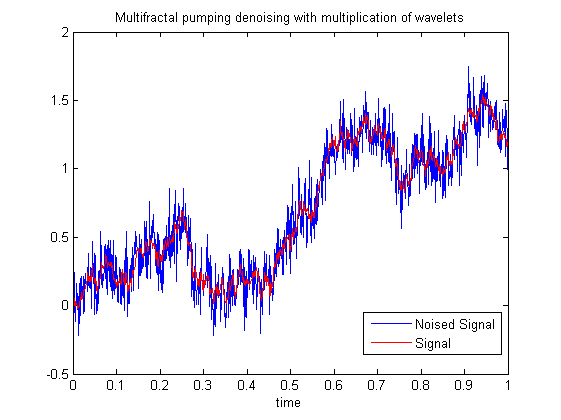
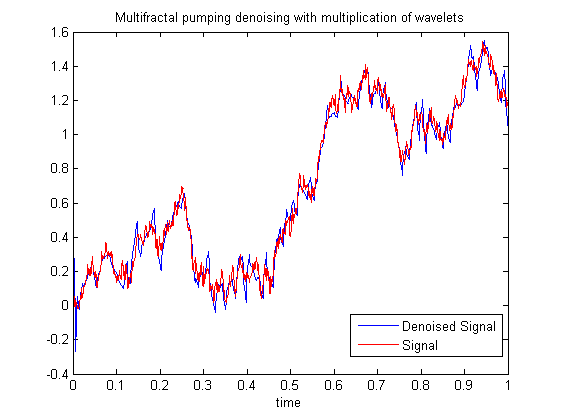

| FRACLAB Functions |
|
Performs the Multifractal Denoising of a 1D signal using a Multifractal pumping method and multiplying the wavelets coefficients by a number Xj in (0,1) constant by scales
DENX = mfdnorm1d(x,QMF)
DENX = mfdnorm1d(...,'Propertyname',Propertyvalue)
[DENX,SIGMA] = mfdnorm1d(...,'autonoise')
DENX = mfdnorm1d(x,QMF) Computes the denoised signal, DENX, of the input signal x using a specific quadrature mirror filter, QMF.
DENX = mfdnorm1d(...,'Propertyname',Propertyvalue) Computes the denoised signal, DENX, applying the specified property settings. The property setting can be choosen from the list below :
| Property | Purpose |
|---|---|
| 'increase' |
The DENX is computed with a specific regularity increase, R. The parameter R
is a positive real. |
| 'noise' |
The DENX is computed with a specific standard deviation of the noise, sigma. The parameter sigma
is a positive real. |
| 'level' |
The DENX is computed with a specific start level, L. The parameter L is a positive
integer in (1+log2(length(x))/2,log2(length(x))) that defines the start level where the computation begins. |
[DENX,SIGMA] = mfdnorm1d(...,'autonoise') Computes the denoised signal, DENX, of the input signal x
using an estimated standard deviation of the noise, SIGMA, this value can be then returned if wanted.
If 'autonoise' is not specified, the default value is SIGMA = 0.5.
|
The estimation of standard deviation |
N = 1024 ; H = 0.5 ; t = linspace(0,1,N);
x = fbmwoodchan(N,H); b = randn(N,1);
xb = x + b/8;
QMF = MakeQMF('daubechies',4);
y = mfdnorm1d(xb,QMF,'increase',0.3);
figure; plot(t,xb); hold on; plot(t,x,'r');
title ('Multifractal pumping denoising with multiplication of wavelets');
xlabel ('time'); legend('Noised Signal','Signal');
figure; plot(t,y); hold on; plot(t,x,'r');
title ('Multifractal pumping denoising with multiplication of wavelets');
xlabel ('time'); legend('Denoised Signal','Signal');


mfbayesian1d, mfdnolinear1d, mfdpumping1d, waveshrink1d
| |
mfdnolinear2d | mfdnorm2d | |